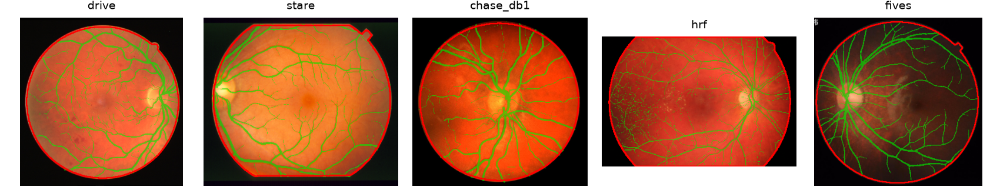
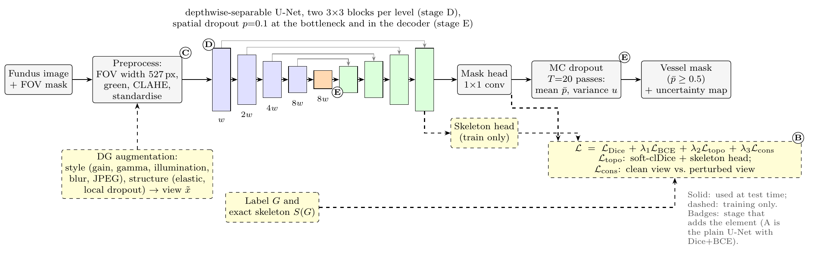
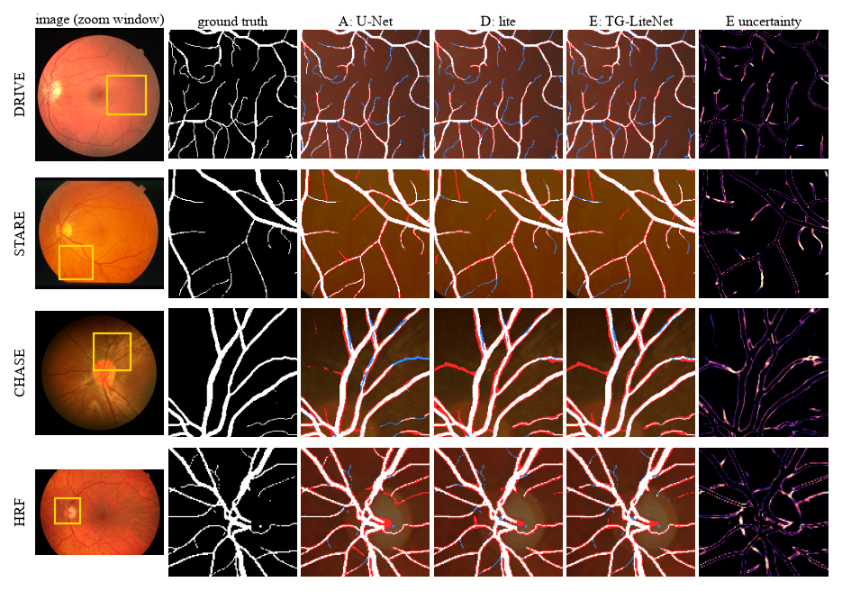
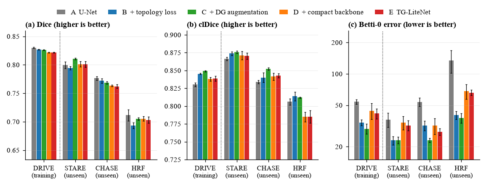
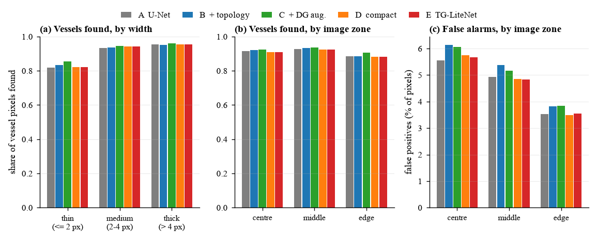

A tiny neural network that traces the blood vessels in eye photographs, trained on one dataset and tested on three it has never seen. We did not just build it. We tested every ingredient, and the honest results are more interesting than a simple win.
>>> Topology-aware loss
>>> Robustness augmentation
>>> Depthwise-separable backbone
>>> Monte-Carlo-dropout uncertainty
Abhiraj Agarwal · Shashwat Rajan · Tanish Shitanshu
Shiv Nadar Institution of Eminence
Doctors look at the tiny blood vessels at the back of your eye to spot diseases like diabetes early. Tracing them by hand is slow, so we want a computer to do it.
If a model draws a branch with a gap in it, it still looks almost right, but a doctor measuring branching would be misled. Normal accuracy scores barely notice a gap. We use scores that do.
A model trained on photos from one camera often gets confused by another, like learning one person’s handwriting and then reading someone else’s. We train on DRIVE only and test on STARE, CHASE_DB1 and HRF.
A rural clinic may have a basic laptop and no graphics card. So the model should be small and fast. The standard U-Net has 31 million numbers to learn; ours has 0.21 million.

We start from a plain U-Net and add one ingredient at a time. Click a stage to see what changed and what it did to the scores.

We thin every vessel to a one-pixel centreline. The loss rewards the model when its centreline lies on a true vessel and the true centreline is found. Gaps now cost points. This is called soft-clDice.
During training we randomly make photos messier: uneven light, blur, noise, JPEG artefacts, and gentle bending. A second loss asks the model to give the same answer for the clean and messy copy. Idea: do not rely on one camera’s look.
Each 3×3 convolution is split into two cheaper steps (depthwise, then pointwise), as in MobileNets. This cuts the parameters 147-fold. Dropout adds an optional uncertainty map.
These are the real predictions of our trained models on unseen photos. Move the sliders and watch the scores and the number of broken vessel pieces change as it happens.
Try this: pick A U-Net, set the fragment slider to 0 and note the extra pieces. Now drag it to ~150. The count collapses, and the Dice barely moves. That is why a simple clean-up step beats most of the “topology” gain.
Scores here use the model’s working resolution, so they differ slightly from the paper’s tables, which use the original image size.

Five stages, five random seeds each, 70 trained models in total. Pick a score and a dataset. Remember: for Betti-0 error (broken pieces) lower is better.
These checks need no retraining. They are the most important part of the study, because without them we would have drawn the wrong conclusion.
Removing tiny specks brings every model to about 5 broken pieces, including the plain U-Net (75 → 4.7). So the topology loss’s big “broken pieces” win was mostly a clean-up effect.
The topology-trained models over-draw at the usual 0.5 cut-off. With the cut-off tuned on validation images they have the best Dice (0.782 vs 0.757). The Dice “cost” was mostly calibration.
Without resizing photos to a fixed width, the plain U-Net collapses (Dice 0.768 → 0.637), while the compact models hold (0.757 → 0.750). Only A, D and E were tested this way.
We tried every mix of backbone, topology loss and DG augmentation. Toggle the chips to find a cell.

TG-LiteNet has 147× fewer parameters than the U-Net, but it is only about 8.8× faster on a laptop CPU. And a plain small U-Net matches it. Hover a dot.
Depthwise convolutions do very little arithmetic per byte of memory they read, so counting operations over-states the speed-up.
A base-8 U-Net with the same operation count runs in 67 ms (TG-LiteNet: 209 ms) with the same Dice.
A base-16 U-Net (1.94 M parameters, still under 2 M) is as fast (187 ms) and better connected. For a CPU-only clinic, that is what we would deploy.
We run the model 20 times with random dropout. Where the runs disagree, it is unsure. If that works, we can throw away the unsure parts and keep the reliable ones.
Removing the 10% most uncertain pixels cuts the pixel error from 4.7% to 1.6% on DRIVE and from 6.5% to 3.5% on HRF. Uncertainty correlates with real errors (0.31–0.34).
Removing the most uncertain images is no better than removing random ones on DRIVE and STARE, and is worse than random on HRF. With a 20× running cost, we would drop MC dropout.
A short error analysis of the saved predictions (seed 0, unseen datasets, threshold 0.5). Which vessels are missed, and what are the false alarms?

scripts/failure_analysis.py: vessels found by width (a) and by image zone (b), and false alarms by zone (c).Did it work? Partly, and we know exactly which parts.
We taught a small computer program to trace blood vessels in eye photos, and we wanted it to stay accurate on photos from other cameras while staying tiny. Our clever trick to keep the vessels connected helped a little, but when we ran extra checks we found a simple clean-up step gave nearly the same benefit to every program. So the real lesson is not “our trick is amazing”. It is that we tested honestly and found out what actually works.
Every number in the paper and on this page is generated from the saved runs by scripts in the repository.
# install (PyTorch separately, CUDA build) pip install -r requirements.txt pip install -e . pytest -q # 36 tests python scripts/download_data.py python scripts/prepare_data.py
# the experiments (resumable)
python scripts/run_experiments.py --groups primary --native-eval
python scripts/aggregate_results.py
python scripts/make_report_assets.py
python scripts/failure_analysis.py
python scripts/make_website_data.py
| Path | What it holds |
|---|---|
| tglite/ | models, losses, data, metrics, training |
| configs/base.yaml | every hyper-parameter |
| scripts/ | download, train, evaluate, aggregate, figures |
| results/runs/ | per-image results of all 70 runs |
| report/ | IEEE paper (LaTeX) and figures |
| docs/ | this website |
Seed-to-seed variation can match small gains: stage A’s unseen Dice ranges from 0.755 to 0.769 over five seeds.
No test image was used for training, tuning or picking checkpoints, but we looked at the results while designing the experiments, so the test sets are held-out, not untouched. The comparisons are uncorrected, and the fragment size and tuned thresholds (chosen on four validation images) were chosen after the fact.
Standard PyTorch on a laptop CPU. Cloud machines varied up to 2× for identical models, which is why we use a controlled laptop benchmark.
Only seed 0 kept its prediction maps, so those numbers describe kinds of error and are not used for headline claims.
Our absolute numbers cannot be compared with papers that train on several datasets or adapt at test time.